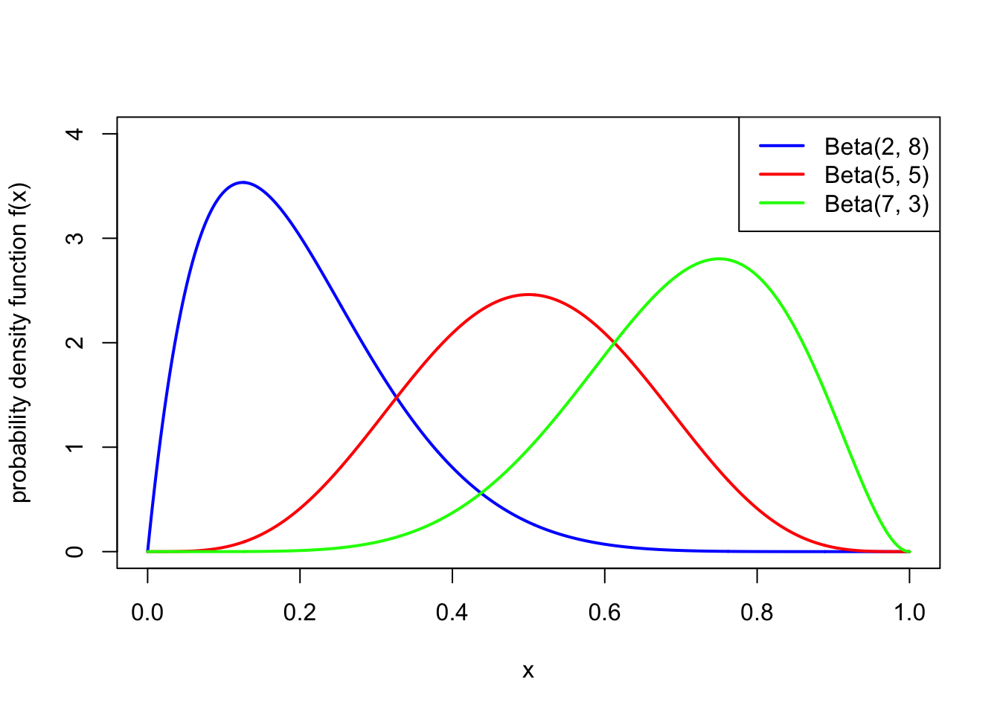
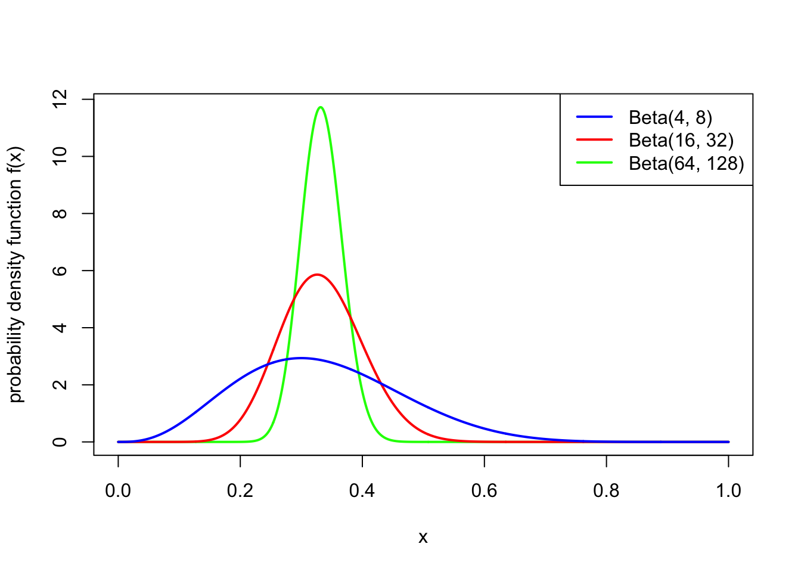

20 More Bayesian models
20.1 Beta distribution
In our fake-coin example in the last lecture, we had a prior PMF for the parameter \(\theta = p\) that could only take one of three possible values. But when doing Bayesian statistics with a parameter that represents a probability, it makes more sense to have a prior PDF that covers the whole interval \([0,1]\). After all, any parameter value that is given a probability of 0 in the prior always has a probability 0 in the posterior as well, no matter how strong the evidence in its favour; it’s considered good practice to only put 0 prior probability on parameter values that are literally impossible, such as probabilities below 0 or above 1. (This is sometimes called “Cromwell’s rule”.)
One useful family of distributions to use as a prior distribution for a probability parameter is the Beta distribution, whose range is the whole interval \([0,1]\).
A continuous random variable \(X\) is said to have the Beta distribution with parameters \(\alpha\) and \(\beta\) if it has the PDF [ f(x) = x^{} (1-x)^{- 1} ] and 0 otherwise. Here, the constant [ B(, ) = _0^1 x^{} (1-x)^{- 1} , dx , ] known as the “Beta function”, ensures that the PDF integrates to 1. We write \(X \sim \text{Beta}(\alpha, \beta)\).
Let \(X \sim \text{Beta}(\alpha,\beta)\). Then
- \(\mathbb EX = \displaystyle\frac{\alpha}{\alpha + \beta}\)
- \(\Var(X) = \displaystyle\frac{\alpha\beta}{(\alpha+\beta)^2(\alpha+\beta+1)} = \displaystyle\frac{\mu(1-\mu)}{\alpha+\beta + 1}\), where \(\mu = \mathbb EX\).
(Proving this requires some awkward messing around with Gamma functions, which we won’t bother with here.)
So the idea is that the expectation of \(X\) is decided on by the relative values of \(\alpha\) and \(\beta\), while the variance is decided by the total value of \(\alpha\) and \(\beta\). The following two pictures illustrate this:

Note also that \(\text{Beta}(1,1)\) is the continuous uniform distribution from Example @ref(exm:unifex).
A statistician is studying the probability \(\theta\) that ordinary coins land Heads. She would like to use a prior distribution for \(\theta\) with prior expectation \(0.5\) and prior standard deviation \(0.01\). What Beta distribution would be appropriate to use?
To get \(\mathbb E\theta = 0.5\), we need \(\alpha = \beta\). Then the variance, which needs to be \(0.01^2 = 0.0001\), is [ () = = . ] This requires \(\alpha = \beta = 1250\). (Well, actually \(1249.5\).)
20.2 Beta–Bernoulli model
Consider a Bernoulli likelihood, where \(X_1, X_2, \dots, X_n\) are IID \(\text{Bern}(\theta)\), so have joint PMF [ p(x ) = _{i=1}^n ^{x_i} (1-)^{1 - x_i} = ^{_i x_i} (1 - )^{n-_i x_i} = ^y (1 - )^{n-y}, ] where we have written \(y = \sum_i x_i\) for the total number of successes. Consider further using a \(\text{Beta}(\alpha, \beta)\) prior for \(\theta\), so that [ () = ^{} (1-)^{- 1} ^{} (1-)^{- 1} ] (Because we’re going to use the “posterior has to add up to 1” trick at the end, we’re free to drop constants whenever we want.) This is known as the Beta–Bernoulli model.
Suppose we collect data \(\mathbf x = (x_1, x_2, \dots, x_i)\), with \(y = \sum_i x_i\) successes. What now is the posterior distribution for \(\theta\) given this data?
Using Bayes’ theorem, we have \[\begin{align*} \pi(\mathbf x \mid \theta) &\propto \pi(\theta) p(\mathbf x \mid \theta) \\ &= \theta^{\alpha-1} (1-\theta)^{\beta - 1} \times \theta^y (1 - \theta)^{n-y} \\ &= \theta^{\alpha + y - 1} (1 - \theta)^{\beta + n - y - 1} . \end{align*}\] We can recognise immediately that this is proportional to the PDF for a \(\text{Beta}(\alpha + y, \beta + n - y)\) distribution, so in particular, the constant of proportionality must be \(1/B(\alpha + y, \beta + n - y)\).
So we see that, like the prior, the posterior is also a Beta distribution, where the first parameter has gone from \(\alpha\) to \(\alpha + y\) and the second parameter has gone from \(\beta\) to \(\beta + (n-y)\). In other words, \(\alpha\) has increased by the number of successes, and \(\beta\) has increased by the number of failures. The expectation has gone from the prior expectation [ ] to the posterior expectation [ .] This can be thought of as a sort of average between the prior expectation \(\alpha/(\alpha + \beta)\) and the mean of the data \(y/n\).
20.3 Modern Bayesian statistics
In this section, we’ve given just a brief taster of Bayesian statistics. Bayesian statistics is a deep and complicated subject, and you may have the opportunity to find out a lot more about it later in your university career.
We have seen that in Bayesian statistics, one brings in a subjective “prior” based on previous beliefs and evidence, then updates this prior based on the data. This contrasts with the more traditional frequentist statistics. In frequentist one uses only the data – no prior beliefs! – and judges to what extent the data is consistent or inconsistent with a hypothesis, without weighing in on how likely such a hypothesis is. (Frequentist statistics is the main subject studied in MATH1712 Probability and Statistics II.)
In the two main examples of Bayesian statistics we have looked at – the Bernoulli likelihood and the normal likelihood – we ended up with a posterior in the same parametric family as prior, just with different parameters. Such a prior is called a “conjugate prior”. Of course, these are very convenient and easy to work with. However, with more complicated likelihoods and more complicated priors – especially those not with a single parameter but with many parameters – calculating the posterior distribution can be very difficult. In particular, working out the constant of proportionality (even just approximately) and/or sampling from the posterior distribution are very hard problems.
For this reason, Bayesian statistics was for a long time a minor area of statistics. However, increases in computer power in the 1980s made some of these problems more tractable, and Bayesian statistics has increased in importance and popularity since then.
For a while, there was an occasionally fierce debate between “Bayesians” and “frequentists”. Frequentists thought that bringing subjective personal beliefs into things was unmathematical, while Bayesians thought that ignoring how plausible a hypothesis is before testing it is unscientific. The debate has now largely dissipated, and it is largely accepted that modern statisticians need to know about both frequentist and Bayesian methods.
There are still plenty of open problems in Bayesian statistics, and lots of these involve the computational side: finding algorithms that can efficiently calculate the normalising constants in posterior distributions or sample from those posterior distributions, especially when the parameter(s) have very high dimension.
Summary
- In Bayesian statistics, we start with a prior distribution for a parameter \(\theta\), and update to a posterior distribution given the data \(\mathbf x\), through \(\pi(\theta \mid \mathbf x) \propto \pi(\theta)p(\mathbf x \mid \theta)\), or \(\text{posterior} \propto \text{prior} \times \text{likelihood}\).
- The Beta distribution is a useful family of distributions to use as priors for probability parameters.
- A Beta prior for a Bernoulli likelihood leads to a Beta posterior with different parameters.
- A normal prior for the expectation of a normal likelihood wioth known variance leads to a normal posterior with different parameters.